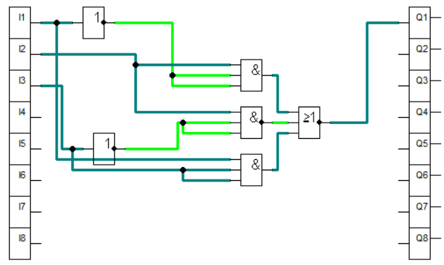
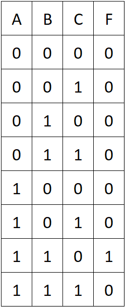

Kombinációs logikai hálózat vizsgálata

Alap függvény: F=¯(¯A B+¯(B¯C)+AC)
Igazság tábla szimulációs adatokkal:

A kanomikus diszjunktiv alak felirása: F=AB¯C
Átalakitás csak NAND kapus megvalositáshoz: F=¯(¯(AB¯C))
Átalakitás csak NOR kapus megvalositáshoz: F=¯(¯A+¯B+C)